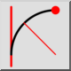

amp;Tangent, punkt, raadius
Tööriistariba / ikoon:


Menüü: amp;Joonista > amp;Arc > amp;Tangent, punkt, raadius
Otsetee: A, T
Käsklused: arctangentpointradius | at
Tööriistariba / ikoon:


Joonistab antud raadiusega kaare, mis puutub objekti ja läbib punkti.